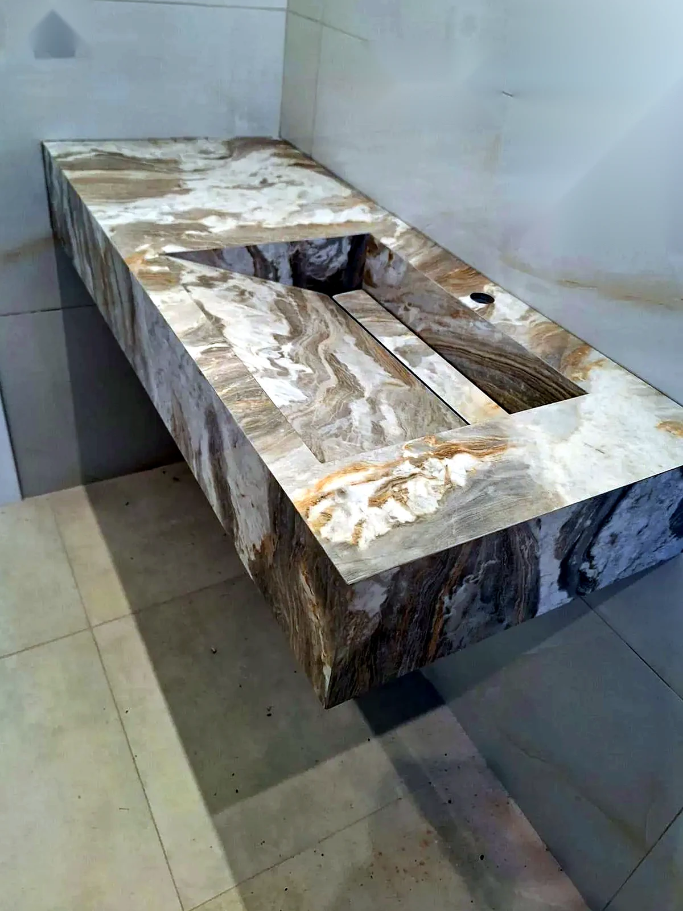
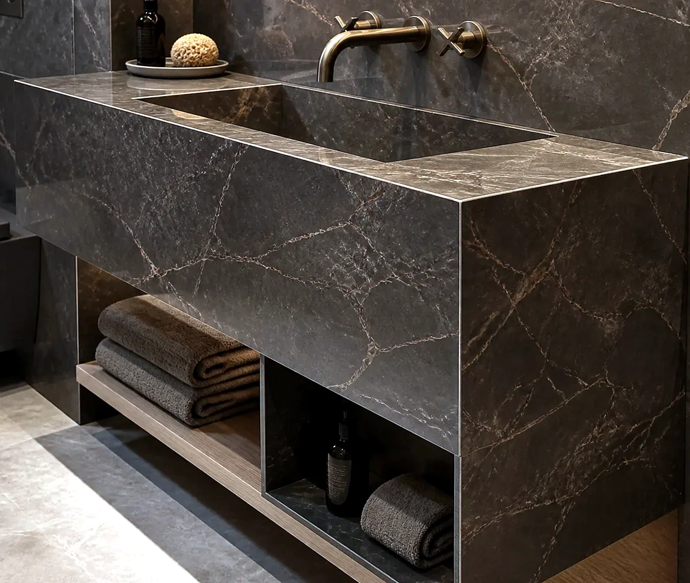
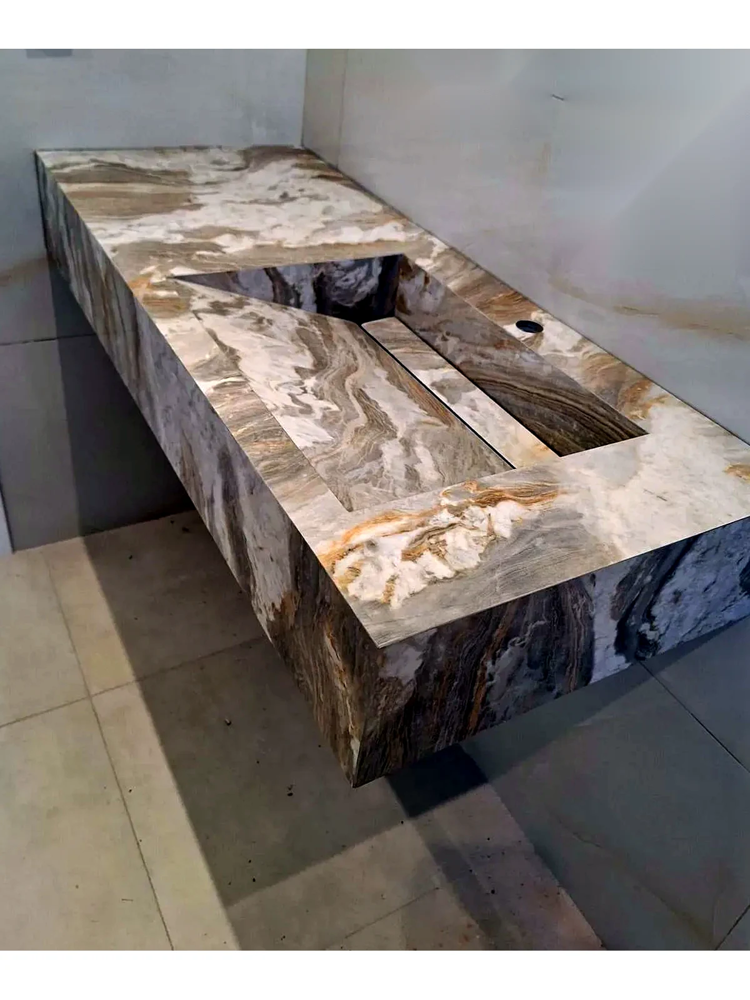
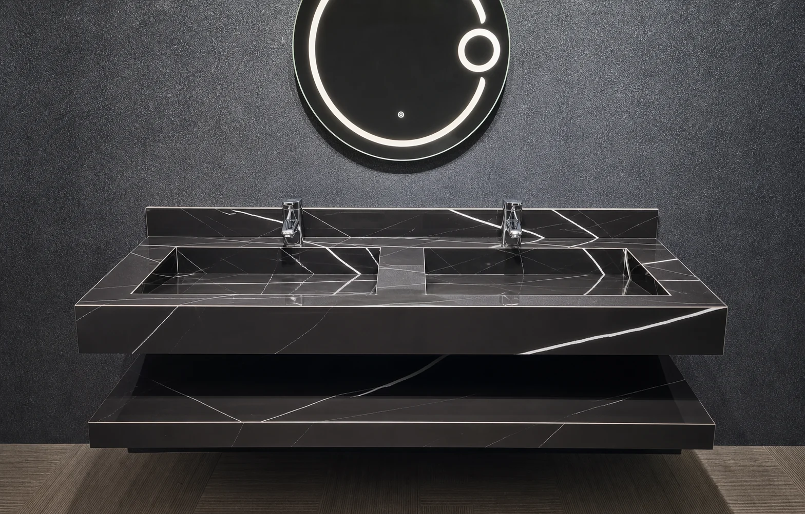
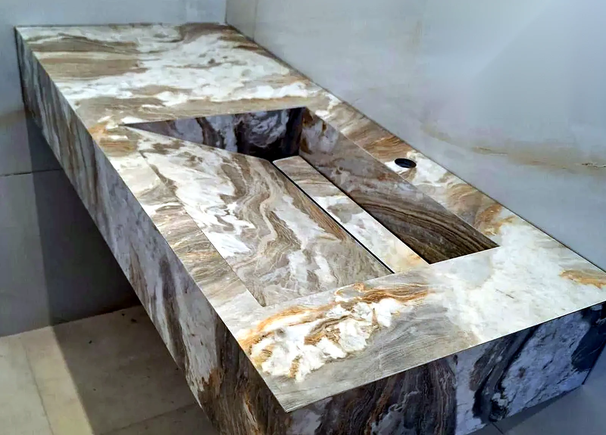
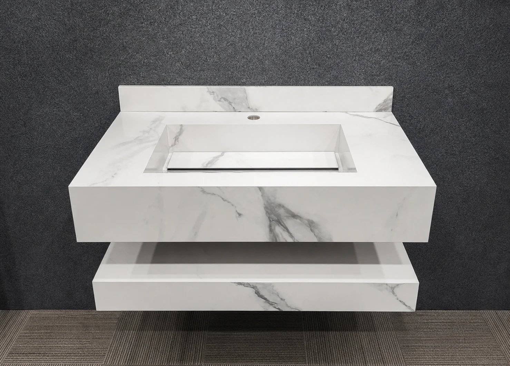

What is porcelain fabrication?
Porcelain fabrication is the process of cutting, mitring and finishing porcelain slabs into made-to-measure surfaces such as sinks, vanity tops, splashbacks, shelves and bathroom panels.

Porcelain Fabrication
Bespoke porcelain fabrication in London for mitred sinks, vanity tops, splashbacks, returns and large-format bathroom surfaces made to measure.
Each fabricated porcelain detail is planned around dimensions, edge treatment, surface tone, adjoining tiling and the way the piece will be used every day.
Bathrooms
Artiling Studio creates bespoke bathroom surfaces London interiors can build around, from fabricated sink pieces and vanity tops to splashbacks, shelves, side returns and adjoining porcelain details.
The work is planned as a connected composition so the porcelain sink, surrounding tiling and large-format surfaces feel resolved rather than assembled from separate parts.
See our recent tiling and porcelain projects, contact the studio or Request a quote for porcelain fabrication in London.




Sink Fabrication
Mitred porcelain sinks are shaped around clean edges, precise joins and calm proportions. They can be designed for cloakrooms, long vanity areas, guest bathrooms and refined residential interiors.
Custom porcelain sinks London projects often need are fabricated around width, depth, tap position, waste detail, surface fall and the surrounding bathroom finish.
Vanity Surfaces
Porcelain vanity tops London bathrooms need can be fabricated to align with drawers, large-format wall tiling, mirrors, brassware and splashback details. The aim is a surface that feels architectural and quietly practical, including alongside wet room tiling in adjoining shower areas.
We consider the visible grain or veining direction, edge thickness, cut-outs, returns and transitions so each piece sits naturally within the wider bathroom.

Definition
Porcelain fabrication is the process of cutting, mitring and finishing large-format porcelain slabs into made-to-measure pieces such as integrated sinks, vanity tops, splashbacks, shelves, side panels and returns.
For bathrooms, the most important details are edge thickness, mitred corners, tap and waste cut-outs, falls inside the basin, support, access and how the fabricated piece meets the surrounding tiling.
Large-format porcelain fabrication for slabs, vanity panels, wall surfaces and feature pieces where careful cutting and edge control matter.
Dimensions, mitres, cut-outs, falls, returns and joins are planned before fabrication so the finished piece feels intentional.
Sinks, vanity tops and bathroom surfaces can be planned alongside tiling, wet room details and adjoining porcelain finishes.
Dimensions, wall conditions, tap positions, waste positions and adjoining surfaces are checked before the porcelain is cut.
The slab direction, veining, edge thickness and visible returns are planned so the finished surface feels composed.
Cut-outs, mitred edges, basin falls and joins are fabricated with attention to clean lines and practical daily use.
The fabricated porcelain is coordinated with tiling, brassware, cabinetry, mirrors and wet room details on site.
Frequently Asked Questions
Porcelain fabrication is the process of cutting, mitring and finishing porcelain slabs into made-to-measure surfaces such as sinks, vanity tops, splashbacks, shelves and bathroom panels.
Yes. Porcelain can be fabricated into mitred sinks, trough basins and vanity compositions when the slab, support, falls, waste position and edge details are planned correctly.
Useful details include dimensions, photos or drawings, the porcelain finish, sink or vanity layout, tap and waste positions, splashback height, return details and the project location.
Yes. It works well where the surface needs to be durable, water resistant and visually calm, with fewer separate components and cleaner transitions between areas.
Fabrication Quote
Share dimensions, drawings, photos and the type of porcelain detail you are planning.